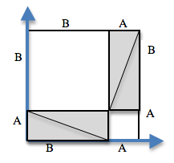

Alunos retornam aos Teorema de Pitágoras e a fórmula da distância que usaram no Bootstrap 1, mas agora com estruturas de dados e com toda a função atualiza-mundo.
Os alunos irão usar diferentes ramos Cond para identificar colisões nos seus jogos
Standards and Evidence Statements:
Standards with prefix BS are specific to Bootstrap; others are from the Common Core. Mouse over each standard to see its corresponding evidence statements. Our Standards Document shows which units cover each standard.
Length: 90 minutes
Glossary:
hipotenusa: o lado oposto ao ângulo de 90-graus em um triângulo-retângulo
Materials:
Lápis/canetas aos alunos, e giz/marcadores de quadro branco aos professores
Cartazes da turma (Lista de regras, conhecimentos básicos, calendário do curso)
Ambiente de Edição (WeScheme ou DrRacket com o pacote bootstrap-teachpack instalado)
Apostila dos Alunos
Tablea de Linguagem
Recortes da Figura do Gato e do Cachorro
Recortes de Teorema de Pitágoras com os materiais [1, 2] - 1 por grupo
The Ninja World 5 file [NW5.rkt from source-files.zip | WeScheme preloaded on students’ machines
Preparation:
Arranjos de assento: preferencialmente aglomerando as mesas
Types
Functions
Número
+ - * / sq sqrt expt
String
string-append string-length
Figura
rectangle circle triangle ellipse radial-star scale rotate put-image
Booleano
= > < string=? and or
Introdução
Overview
Learning Objectives
Evidence Statements
Product Outcomes
Materials
Lápis/canetas aos alunos, e giz/marcadores de quadro branco aos professores
Cartazes da turma (Lista de regras, conhecimentos básicos, calendário do curso)
Ambiente de Edição (WeScheme ou DrRacket com o pacote bootstrap-teachpack instalado)
Apostila dos Alunos
Tablea de Linguagem
Recortes da Figura do Gato e do Cachorro
Recortes de Teorema de Pitágoras com os materiais [1, 2] - 1 por grupo
The Ninja World 5 file [NW5.rkt from source-files.zip | WeScheme preloaded on students’ machines
Preparation
Arranjos de assento: preferencialmente aglomerando as mesas
Introdução
(Time 5 minutos)
Agora mesmo, tanto no Mundo Ninja quanto nos seus jogos, nada acontece quando o jogador colide com outro
personagem do jogo. Precisamos escrever uma função que muda isso. Isto vai precisar de
um pouco de matemática, mas felizmente é exatamente o mesmo que estava no Bootstrap:1.
Na imagem acima, o quão distantes o gato e o cachorro estão?
Se o gato foi movido um espaço para a direita, o quão longe eles estariam?
E se o gato e o cachorro trocassem de lugar um com o outro?
Em uma dimensão, assim como em uma régua, encontrar a distância é muito fácil. Se os personagens
estão na mesma linha, você apenas subtrai uma coordenada da outra, e você consegue a distância.
No entanto, se tudo o que fizermos for subtrair o segundo número do primeiro, a função funcionaria apenas
metado do tempo!
Quando o gato e o cachorro foram trocados, você ainda subtrai a posição do cachorro da
posição do gato, ou subtrai a posição do gato da posição do cachorro? Por que?
Desenhe uma linha numérica no quadro, com os recortes do gato e do cachorro nas posições dadas.
Peça aos alunos para dizerem a você a distância entre eles, e mova as imagens de acordo.
Fazer com que os alunos façam isso também pode funcionar: desenhe uma linha numérica, peça que dois alunos fiquem em pé em diferentes
pontos da linha, usando seus braço ou recortes para dar aos objetos diferentes tamanhos. Movimente os alunos pela
linha numérica até eles se encontrarem, e calcula a distância na linha numérica.
Distância em 1D
Overview
Learning Objectives
Evidence Statements
Product Outcomes
Materials
Preparation
Distância em 1D
(Time 10 minutos)
Distâncias não podem ser negativas, então precisamos ter certeza de sempre subtrair o número
menor do número maior. Se os personagens estão na mesma dimensão, existem duas condições:
se o primeiro número for maior, e a outra se o segundo número for maior.
Que tipo de função nós precisamos, quando temos várias
condições?
Escreva dois exemplos para tamanho-linha em que ela diminui o
menor número do maior. Comece com um exemplo usando
os números 23 e 5, e depois faça um segundo exemplo com 5 e 23 na
outra ordem.
Agora temos uma ideia dos resultados para a instrução cond, mas a função cond também
precisa de Testes. Nós queremos testar para ver ser o primeiro
número dado para tamanho-linha é maior que o segundo número.
Como você escreveria esse teste em código no Racket?
E qual seria o resultado para esse teste? Se a é
maior que b, qual número deve ser subtraído do
outro?
Como você poderia incluir um teste para saber se os dois números são iguais,
sem adicionar um terceiro ramo no cond?
Escreva a definição para tamanho-linha.
É possível substituir o segundo teste com um else, porque existem apenas duas opções:
tamanho-linha vai subtrair b de a, ou a do b. (Se os
números são iguais, não importa a ordem com que eles são subtraídos.) No entanto, d
bers are equal, it doesn’t matter which is subtracted.) No entanto, fazer com que os alunos escrevam os
testes completos os faz pensar sobre o que exatamente está sendo testado em cada ramo da função.
É possível evitar usar um condicional inteiro pegando o valor absoluto da diferença
(a função abs faz isso); se você está trabalhando com alunos mais velhos que já conhecem sobre
valor absoluto você poderia mostrá-los. Usando cond, no entanto, enfatiza como estruturas de código surge
dos exemplos.
A Fórmula da Distância
Overview
Learning Objectives
Reforçam sua compreensão sobre a fórmula da distância
Evidence Statements
Product Outcomes
os alunos escreverão a função da distância
Materials
Preparation
A Fórmula da Distância
(Time 20 minutos)
infelizmente você não tem nenhum código para calcular a distância em duas dimensões.
Tudo o que você tem atá agora é alguma coisa que te diz o comprimento epenas na dimensao x ou na y.
Como você poderia encontrar a distância entre dois pontos mostrados
nessa figura?
Como você poderia encontrar o comprimento da linha pontilhada, que também
é chamada de Hipotenusa?
Vamos começar com o que sabemos: a linha pontilhada emio que forma um triângulo, e podemos
encontrar o tamanho dos outros dois lados, nomeados "A", "B" e "C".
Qual é o tamanho-linha de A?
Para tornar sua vida mais fácil, você pode usar a função que você já escreveu: tamanho-linha.
Nesse exemplo, (tamanho-linha A), é 4 e (tamanho-linha B) é 3, mas ainda não sabemos C.
Antigas civilizações tiveram o mesmo problema: eles também se esforçaram para encontrar a distância
entre pontos em duas dimensões. Vamos trabalhar em uma maneira de pensar sobre esse problema:
qual expressão calcula o tamanho da hipotenusa de um triângulo-retângulo?
Distribua materiais do Teorema de Pitágoras [1,
2] para cada grupo, e peça que eles
revisem todos os materiais:
Um grande quadrado branco, com um quadrado menos desenhado dentro
Quatro triângulos cinzas, todos do mesmo tamanho
Todos terão um pacote com os mesmos materiais, mas os triângulos de cada grupo são
um pouco diferentes. A atividade funciona com triângulos de todos os tamanhos, de modo que cada par vai
começar a testá-los em seus próprios triângulos.
Para qualquer triângulo retângulo, é possível desenhar uma figura
onde a hipotenusa é usada em todos os lados de um quadrado. No diagrama mostrado
aqui, o quadrado branco é rodeado por quatro triângulos cinzas, triângulo-retângulos idênticos, todos
com lados A e B. O quadrado tem quatro lados idênticos ao tamanho de C, que
são as hipotenusas dos triângulos. Se a area do quadrado é expressa por
, então a area do espaço em branco é .
Peça que os alunos coloquem seus triângulos cinzas sobre o papel, para combinar com o diagrama.
Movendo os triângulos cinza, é possível
criar dois retângulos que cabem dentro do quadrado original. Enquanto que o espaço
ocupado pelos triângulos foi deslocado, mas não ficou maior ou menor.
Da mesma forma, o espaço em branco foi quebrado em duas partes menores, mas no total
ele permanece do mesmo tamanho. Usando os comprimentos de A e B, pode-se calcular
a area dos dois quadrados.
Qual é a área do quadrado menor? E do quadrado maior?
Você pode ter que apontar explicitamente que o tamanho dos lados-dos-triângulos podem ser
usados como lados-do-quadrado.
O quadrado menor tem uma area de , e o
quadrado maior tem uma area de . Como esses quadrados são apenas o quadrado
original dividido em duas partes, sabemos que a soma dessas áreas deve ser igual
à área do quadrado original:
A mesma equação funciona para qualquer valor de A e de B?
Para conseguirmos isolar o C, precisamos da raíz-quadrada da soma das áreas:
Pitágoras provou que você pode conseguir o quadrado da hipotenusa somando os quadrados
dos outros dois lados. No seu jogo, você vai usar as distâncias horizontal e vertical
entre dois personagens assim como os dois lados do seu trângulo, e usar o
Teorema de Pitágoras para encontrar o comprimento desse terceiro lado.
Lembre os alunos que A e B são os comprimentos horizontal e vertical, que podem
ser calculados pela tamanho-linha.
Vá para a Page 37
de sua apostila - você verá a fórmula escrita.
Desenhe o círculo de avaliação, começando com a
expressão mais simples que você ver primeiro.
Quando tiver o círculo de avaliação completo, transforme ele
em código racket na parte de baixo da página, começando
com (EXAMPLE (distancia 4 2 0 5) ...)
Agora você tem o código que lhe diz a distância entre os pontos (4, 2) e (0, 5).
Mas não queremos que ele funcione para quaisquer pontos. Seria ótimo se tivéssemos uma
função que recebe apenas os X e Y como entrada, e faz os cálculos para nós.
Vá para a Page 38,
e leia a descrição do problemas e o cabeçalho da função
ccom atenção.
Use a Receita de Projeto para escrever sua função de distância.
Sinta-se livre para usar o trabalho das páginas anteriores como seu
primeiro exemplo, e depois faça um por conta própria.
Quando tiver terminado, digite suas funções tamanho-linha e
distancia no seu jogo, e veja o que acontece.
Alguma coisa acontece quando uma função aparece dentro da outra?
Você ainda precisa de uma função que verifique se duas coisas estão colidindo ou não.
Preste muita atenção na ordem das coordenadas que são passadas para a função
distancia. A coordenada-x do jogador (px) deve vir primeiro,
seguida da coordenada-y do jogador (py), x do outro elemento (cx), e y do
elemento(cy). Dentro do corpo da função, tamanho-linha pode calcular apenas
distâncias no mesmo eixo ((tamanho-linha px cx) e (tamanho-linha py cy)).
Assim como fazer estruturas de daods, a ordem importa, e a função da distância não
funcionará de outra maneira. Também lembre-se de verificar se os alunos estão usando sq e
sqrt nos lugares certos.
Colidiu?
Overview
Learning Objectives
Evidence Statements
Product Outcomes
Os alunos escreverão a função colidiu?
Materials
Preparation
Colidiu?
(Time 10 minutos)
Então o que queremos fazer com essa distância?
Qual o máximo que seu perigo e seu jogador podem chegar, antes de
baterem um no outro?
No início da Page 39 você encontrará a
Descrição do Problema para colidiu?.
Preencha a Assinatura, dois Exemplos, e depois escreva o
código. Lembre-se: você PRECISARÁ fazer uso da
função distancia que você acabou de escrever!
Quando você terminar, digite ele em seu jogo, em
colidiu?.
Usando exemplos visuais, pergunte aos alunos que adivinhem a distancia entre um perigo
e um jogador em diferentes posições. O quão longe eles precisam estar antes de
um atingir o outro?
atualiza-mundo
Overview
Learning Objectives
Identificar colisão como um outro sub-domínio que precisa de um comportamento diferente sa função atualiza-mundo
Evidence Statements
Product Outcomes
Os alunos irão usar diferentes ramos Cond para identificar colisões nos seus jogos
Materials
Preparation
atualiza-mundo
(Time 40 minutos)
Agora que você tem uma função que verifica se algo está colidindo,
você pode voltar a modificar o Mundo Ninja.
Das quatro funções maiores do jogo (atualiza-mundo,
desenha-mundo, keypress, e big-bang), qual
você acha que você precisará editar para lidar com colisões?
nós precisaremos fazer mais alguns ramos de cond na atualiza-mundo.
O que deveria acontecer quando o gato colide com o cachorro? Queremos colocar o cachorro
fora da tela, para que ele posso voltar a atacar novamente.
Comece com o teste: como você verifia se o
gato e o cachorro estão colidindo? Você ja escreveu uma função
uqe verifica isso?
Quais são as entradas que ela precisa?
Como você consegue saber o gatoY do mundo?
E a coordenada-x do Gato? Ele está sempre no
centro da tela, então qual é sempre
sua coordenada x?
Como você consegue saber o caoX do mundo?
Temos um caoY no mundo? Onde no jogo
você pode olhar esse número? (Dica: em qual
função você desenha as imagens na
tela?)
Lembre-se que atualiza-mundo devolve um mundo, então qual função deveria vir primeiro no seu resultado?
E o que deve acontecer quando o gato e o cachorro colidirem? Você pode pensar em um
número que coloca o cachorro para fora da tela do lado esquerdo?
O rubiX muda quando o cachorro e o gato colidem? E o
gatoY? Como você obtém cada uma dessas coisas fora do mundo?
Detecção de Colisão deve ser parte da função atualiza-mundo porque o
jogo deve verificar por alguma colisão toda vez que o mundo é atualizado. Os alunos podem
assumir que desenha-mundo deveria tratar a detecção de colisão, mas repare que a
Imagem de desenha-mundo é uma Figura, e suas funções devem retornar um novo mundo a fim de
definir as localizações dos personagens depois de uma colisão.
Agora é hora de tratar as colisões do seu jogo...
Vá para a Page 40 e escreva
mais alguns testes e resultados. Quais personagens do seu jogo podem colidir
com algum outro? O que deve acontecer como resultado? Quando você tiver escrito
cada teste e resultado abaixo, digite-o em seu jogo.
Trabalhe em pequenos grupos para completar os ramos da colisão.
Encerramento
Overview
Learning Objectives
Evidence Statements
Product Outcomes
Materials
Preparation
Encerramento
(Time 5 minutos)
Parabéns! Você concluiu essa lição, e agora está pronto para fazer seu
jogo cada vez melhor. Reserve algum tempo para pensar sobre seu jogo...o que mais você quer que seu jogo
faça? Na pŕoxima unidade você pode adicionar ainda mais coisas, para que seus jogos fiquem ainda mais maneiros.


 Para qualquer triângulo retângulo, é possível desenhar uma figura
onde a hipotenusa é usada em todos os lados de um quadrado. No diagrama mostrado
aqui, o quadrado branco é rodeado por quatro triângulos cinzas, triângulo-retângulos idênticos, todos
com lados A e B. O quadrado tem quatro lados idênticos ao tamanho de C, que
são as hipotenusas dos triângulos. Se a area do quadrado é expressa por
, então a area do espaço em branco é .
Para qualquer triângulo retângulo, é possível desenhar uma figura
onde a hipotenusa é usada em todos os lados de um quadrado. No diagrama mostrado
aqui, o quadrado branco é rodeado por quatro triângulos cinzas, triângulo-retângulos idênticos, todos
com lados A e B. O quadrado tem quatro lados idênticos ao tamanho de C, que
são as hipotenusas dos triângulos. Se a area do quadrado é expressa por
, então a area do espaço em branco é . Movendo os triângulos cinza, é possível
criar dois retângulos que cabem dentro do quadrado original. Enquanto que o espaço
ocupado pelos triângulos foi deslocado, mas não ficou maior ou menor.
Da mesma forma, o espaço em branco foi quebrado em duas partes menores, mas no total
ele permanece do mesmo tamanho. Usando os comprimentos de A e B, pode-se calcular
a area dos dois quadrados.
Movendo os triângulos cinza, é possível
criar dois retângulos que cabem dentro do quadrado original. Enquanto que o espaço
ocupado pelos triângulos foi deslocado, mas não ficou maior ou menor.
Da mesma forma, o espaço em branco foi quebrado em duas partes menores, mas no total
ele permanece do mesmo tamanho. Usando os comprimentos de A e B, pode-se calcular
a area dos dois quadrados.
{kind=link}
{kind=link}